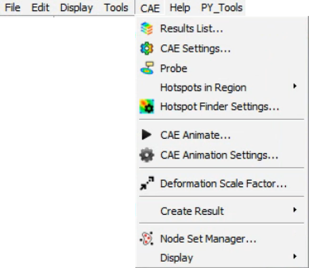

GUI Layout¶
 Menu Bar
Menu Bar
The Following are the hirarchy of menu bar

File Menu

Edit Menu

View Menu

Tools Menu
CAE Menu

Help Menu
Py_Tools

Tool Bar
The following are list of toolbars
File ToolBar
CAE ToolBar
Tools ToolBar
View ToolBar
Labels ToolBar
CAE Display ToolBar
Edit ToolBar
User can create custom toolbar.
Note: Toolbar visibility is based on user profile settings.

Status Bar
The status bar is located in bottom and displays description of the selected menu item.
Dockable Area
Product Explorer, Viewpoints, Results List, Hotspot Finder Settings and XYPlot dialogs are dockable in the left span by default. All can be dockable in right side too.
Viewer Window
View port is the viewer window.